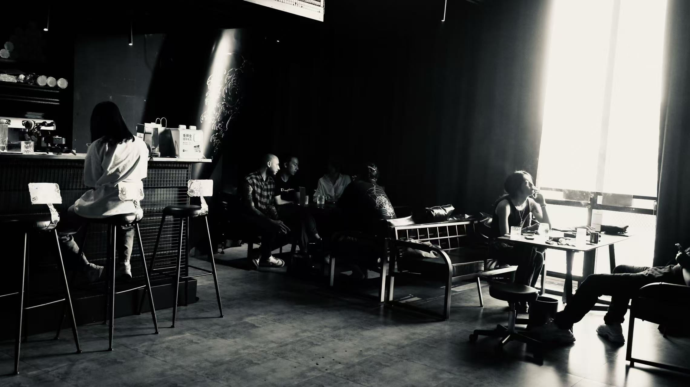
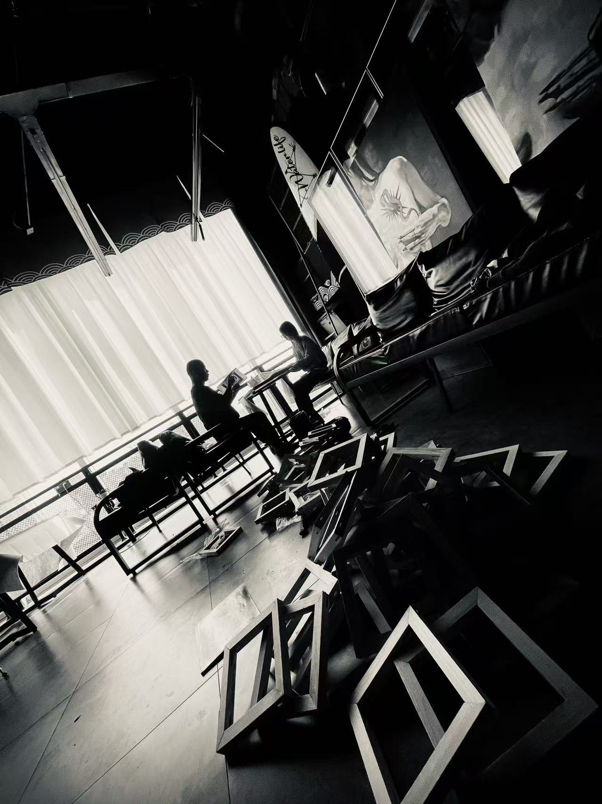
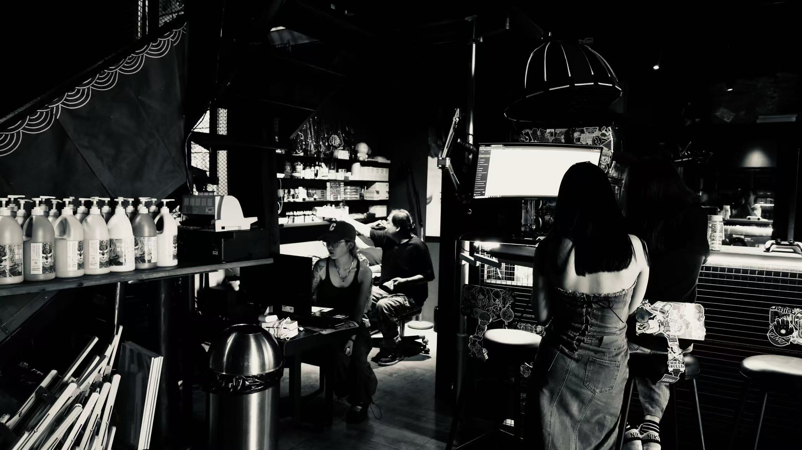
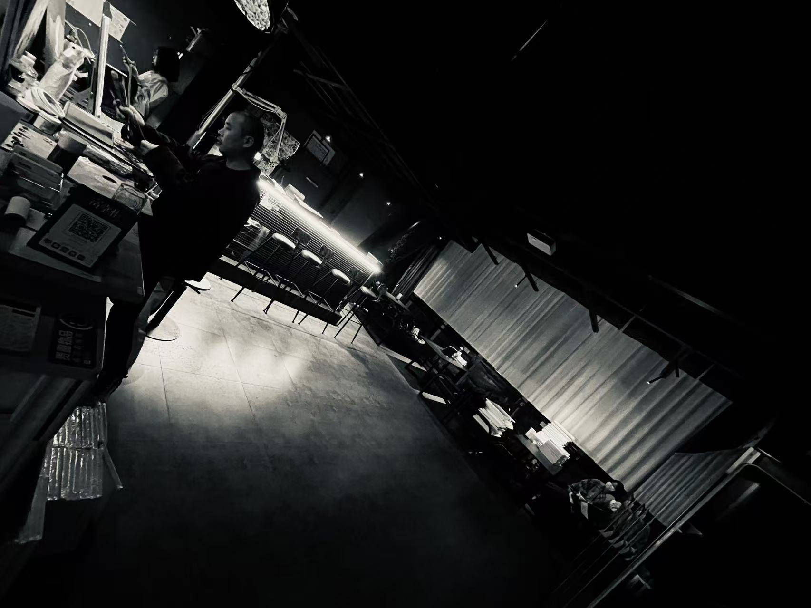
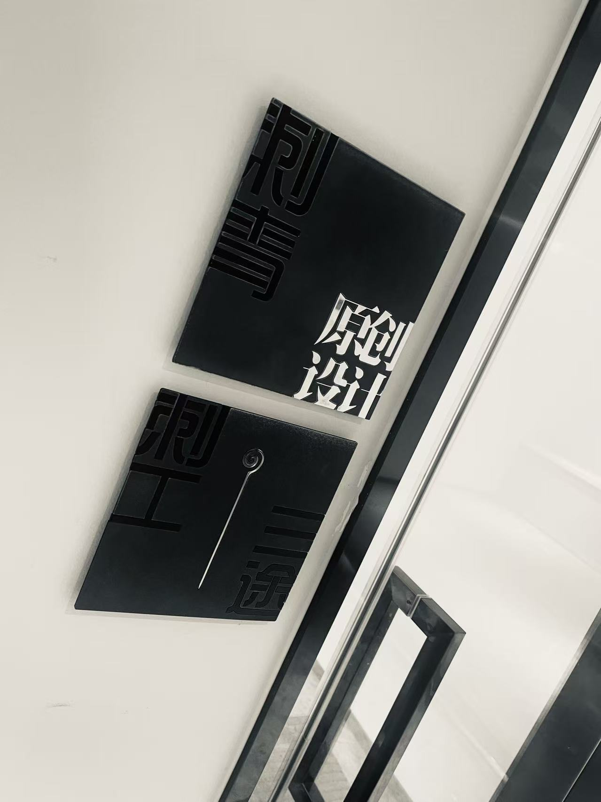
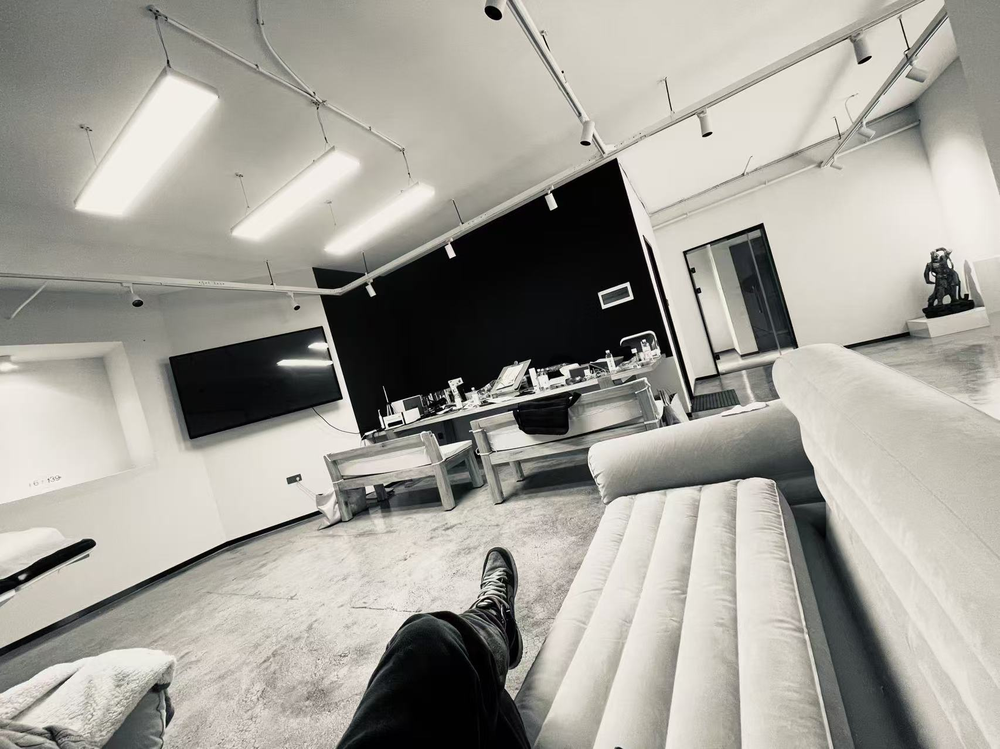
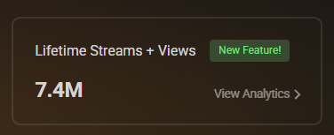
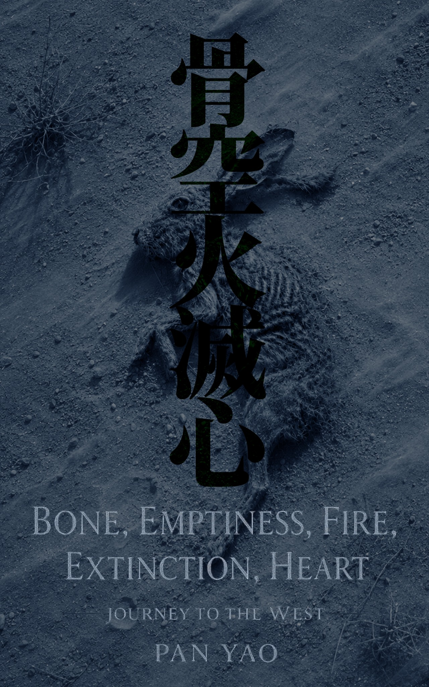

Practice
Painting, sound, and writing.
The development of a visual language, from line and observation to abstraction and work across media.
01 / Studio
Two studios, one continuing practice.
Wenzhe Wujiang Studio
Established in 2010
Wenzhe Wujiang Studio is the starting point of Pan Yao’s sustained studio practice. Work with lines and the body developed a sensitivity to composition, repetition, and the relationship between images and physical space.




Studio photographs provided by the artist.
Santoo Studio
Established in 2018
Santoo Studio continues the earlier studio practice, with painting at its center. Observation, materials, and composition connect the development of a visual language with an expanding practice across writing, sound, and independent research.
The Ming series explores density, balance, boundaries, color, and negative space. The studio provides a continuing context for this artistic inquiry.



Studio photographs provided by the artist.
02 / Formation
Line, body, and observation.
Long-term tattoo practice developed a sensitivity to line, bodily curvature, repetition, and placement. Watercolor, oil, and colored-pencil studies expanded observational precision, material awareness, and compositional control.


03 / Abstraction
From representation to the visual field.
Color, density, boundary, rhythm, and negative space increasingly became the elements through which a composition was organized. Home marks this transition in the existing body of work.

04 / Sound
Duration, repetition, and listening.
Sound extends the practice into time through rhythm, density, transition, and auditory attention.

05 / Writing
Bone, Emptiness, Fire, Extinction, Heart
Beginning with Journey to the West, this work explores the body, perception, and the self through poetic narrative.
